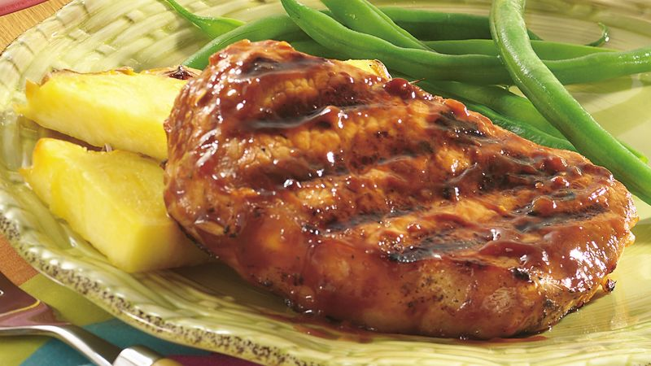

Polynesian Pork Chops

Sweet 'n sour pork chops shine in this easy recipe featuring pineapple, onion, soy sauce, green onions, and Campbell's Condensed Golden Mushroom Soup
Joe loves pork chops; I can't stand them. Since Joe does most of our day to day cooking, I encourage him to make them sometimes. You know, 'cause he loves them. I manage. I almost sorta like pork chops when they're made using this recipe. As long as they're not cooked into hockey puck toughness. Which is most of the time. I just don't get it.
Anyway, this is a nice recipe, and it would be great with chicken breasts or pulled pork. Joe thinks it's awesome with pork chops.
Ingredients
- 4 boneless pork chops, 3/4-inch thick
- 1 teaspoon garlic powder
- 1 tablespoon vegetable oil (yuck)
- 1 medium onion, chopped
- 1 (10.75 ounce) can Campbell's Golden Mushroom Soup
- 1/4 cup water
- 1 (8 ounce) can pineapple chunks
- 3 tablespoons soy sauce
- 1 tablespoon honey
- 2 cups cooked regular long-grain white rice
- Sliced green onion (to preference)
Directions
- Season chops with garlic powder.
- Heat oil in skillet. Cook chops until browned. Add onion.
- Add soup, water, pineapple with juice, soy, and honey. Heat to a boil. Cook over low heat 10 minutes or until done.
- Serve with rice and sprinkle with green onions.